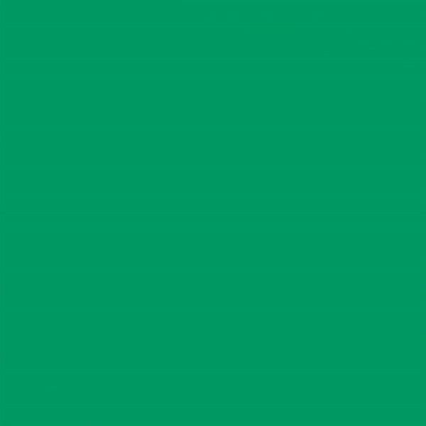

The animation was inspired by Sianne Ngai's Book, Our Aesthetic Categories. There are three categories of aesthetics, cute, zany, and interesting. Being cute has a different meaning. Cute could be adorable, could be warm and fuzzy, could also be fun, which could be affected in comedy. The ability of being cute is being infectious to affect the surroundings. Zany is the second category of aesthetic. As Nagi says, zany are most sharply brought out in performance such as dance, theater, happenings, television, and film. Zany are brought out in physical moves. To move, to hustle, to perform in a special and fun way brings out the zany aesthetic. To hustle in the performance is to be in a state of great activity. The third category of aesthetic is interesting. There are many ways to make an art to be interesting. An interesting design depends on its informational content. The information that the message is trying to convey makes the art interesting.
